OpenStreetMap

OpenStreetMap
punti chiave
- progetto opendata
- ispirato a wikipedia
- focus sui dati geografici
- MODIFICABILE
visualizzazione standard
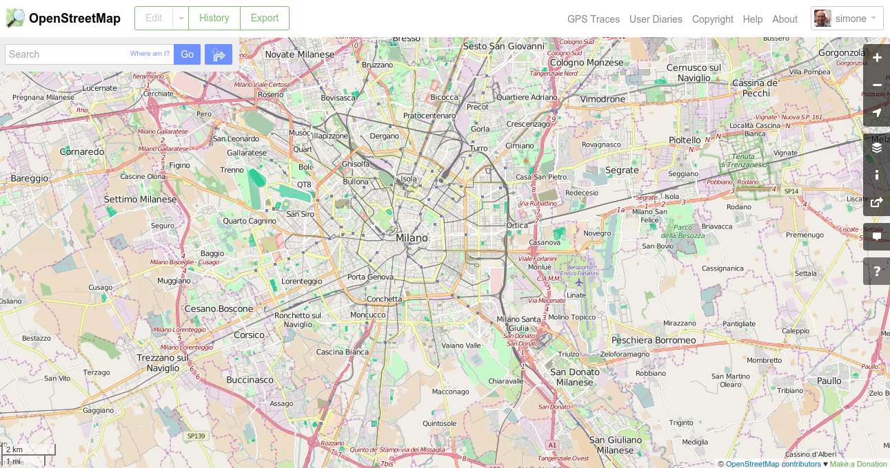visualizzazione ciclo
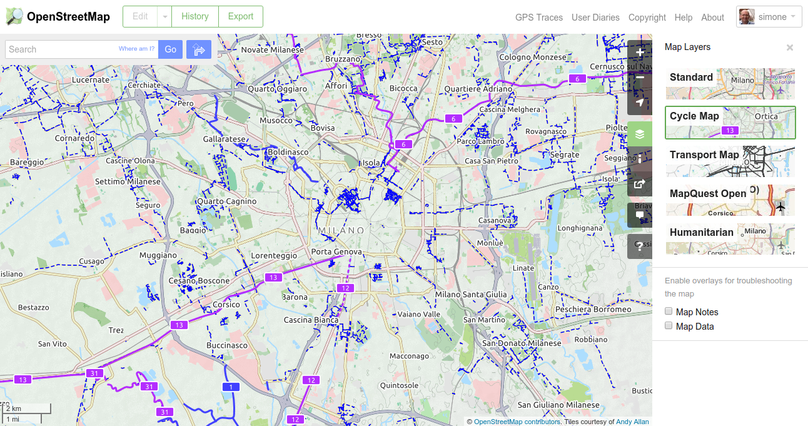visualizzazione trasporti
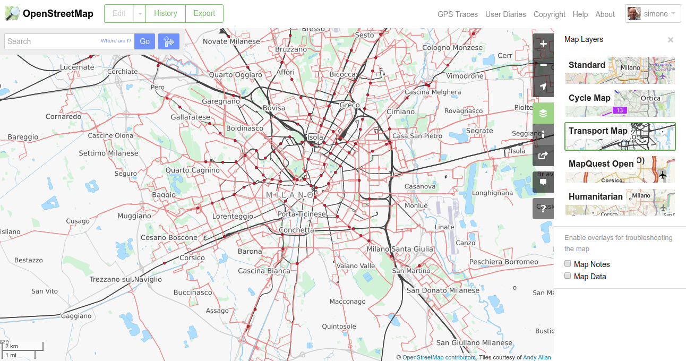visualizzazione emergenze
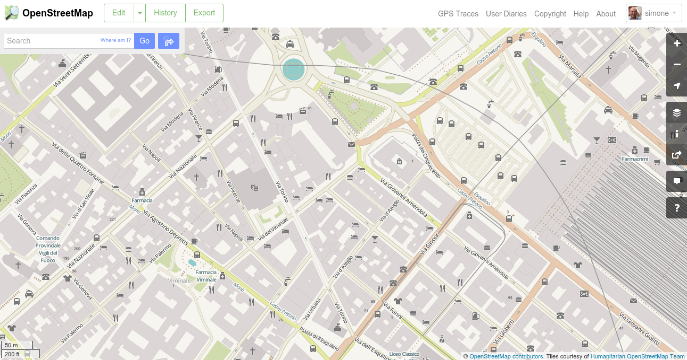denso di dati
- DB Globale: 45GB (+25% da gennaio)
- Delta settimanale: 1.2 GB

Alcuni tematismi
- Civici
- Edificato
- Strade bianche
- Sentieri
- Idranti
- Scale
- Binari
- Corsi d'acqua / Fossi
- Elettrodotti
Storia
- Fondato nel 2004
- marzo 2009 - 100.000 utenti
- gennaio 2010 - 200.000 utenti
- novembre 2011 - 500.000 utenti
- gennaio 2013 - 1.000.000 utenti
- giugno 2015 - 2.500.000 utenti
OpenStreetMap = utenti
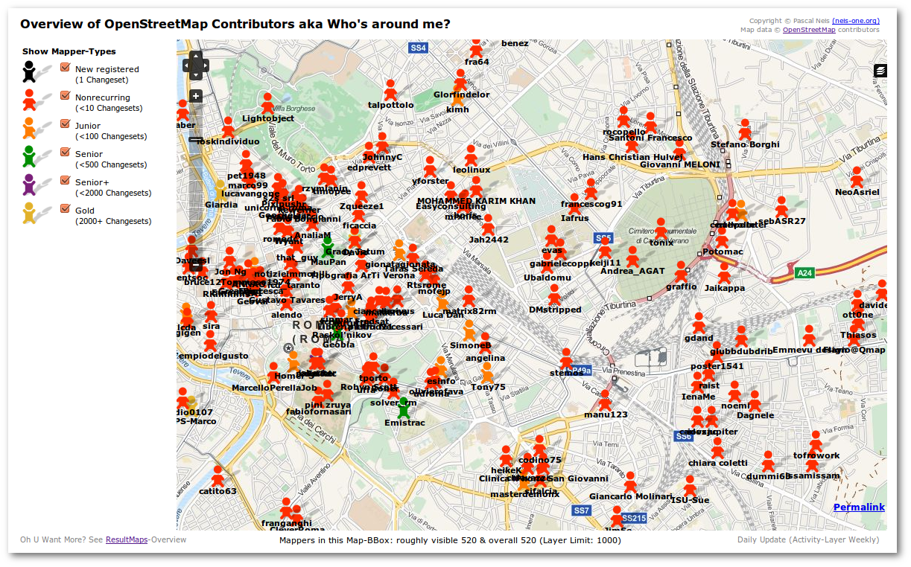Overview of OpenStreetMap Contributors
utenti attivi
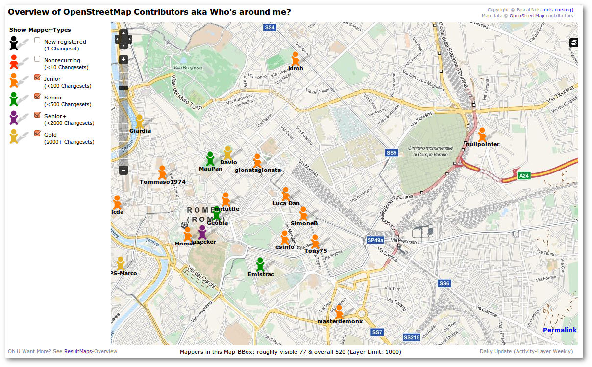Overview of OpenStreetMap Contributors
un utente

Overview of OpenStreetMap Contributors
dove opera
 Your OSM Heat Map
Your OSM Heat Map
attività 1/2
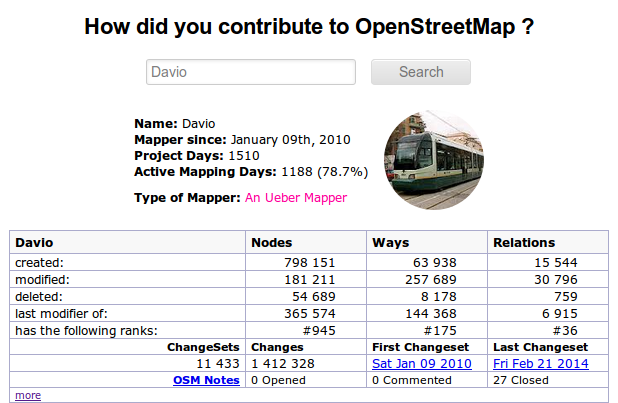How did you contribute to OpenStreetMap?
attività 2/2

How did you contribute to OpenStreetMap?
Davio's home
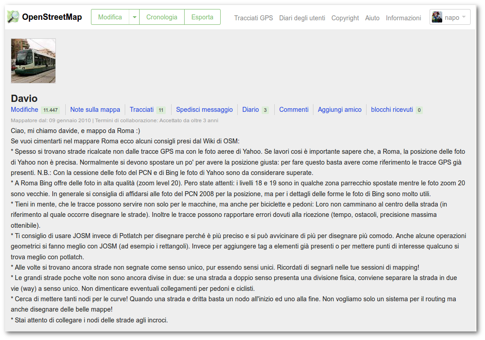OpenStreetMap - Davio home
collaborazione disorganizzata
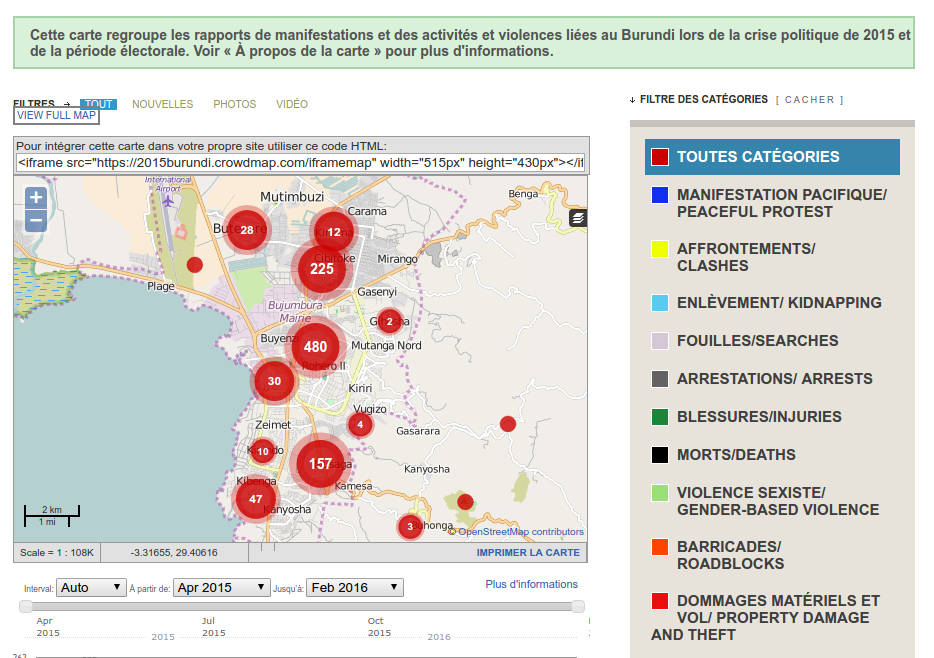Organizzazione dati
- non ci sono layer
- ...ma solo tag
- Map Features, Taginfo
estratti.openstreetmap.it
estrazione dati
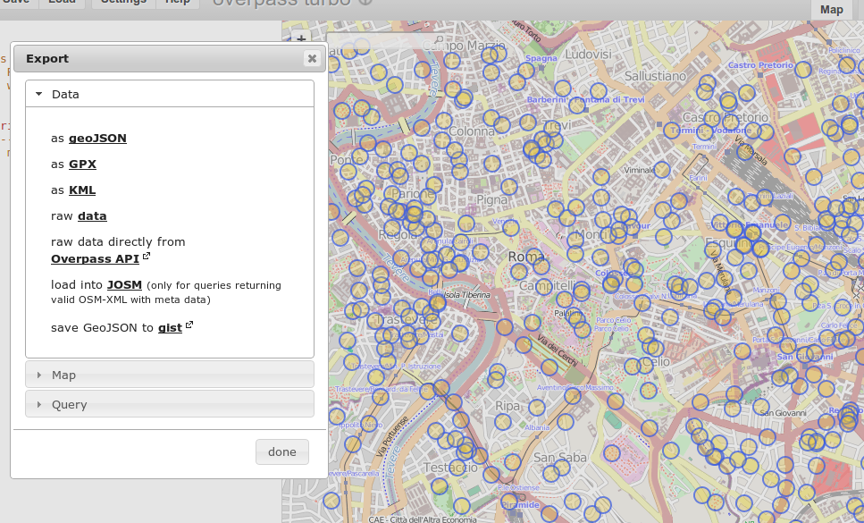esempio estrazione
<query type="node">
<has-kv k="amenity" v="drinking_water"/>
<bbox-query {{bbox}}/>
</query>
estrazione dati complessa
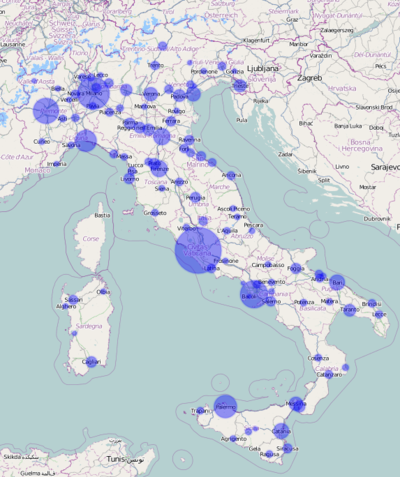ISTAT - Popolazione
{{style:
node {
color:blue;
opacity:0.2;
width:3;
fill-color:blue;
fill-opacity:0.4;
symbol-shape: circle;
symbol-size: eval('max(3,min(200,0.02*Math.sqrt(tag("population"))))');
}
}}aggiornamento rapido
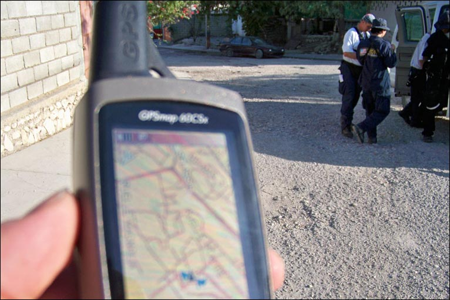product/service

City of New York City and OSM
New York City and OpenStreetMap Collaborating Through Open Data 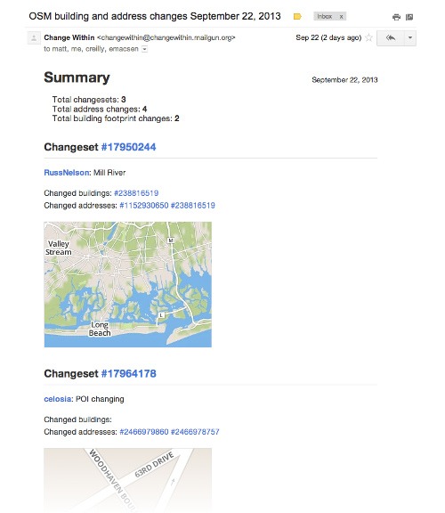Milano

amat-mi.it
Services
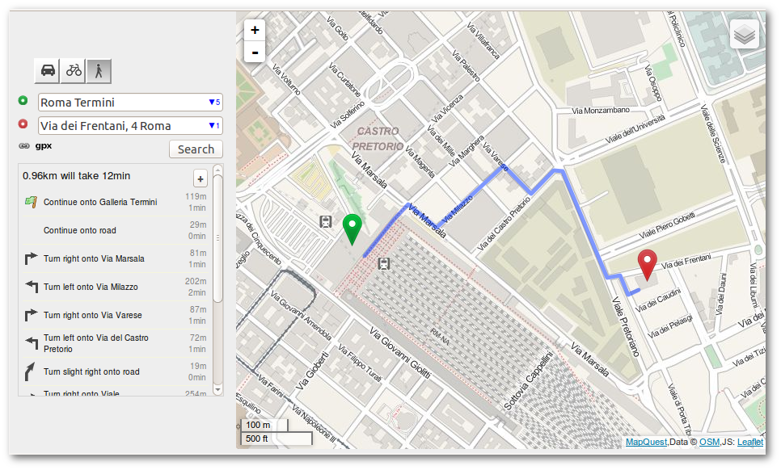 geocoding - routing - public transport - quality assuranceGeocoding e Routing
online, offline, embedded
Leaflet.JS
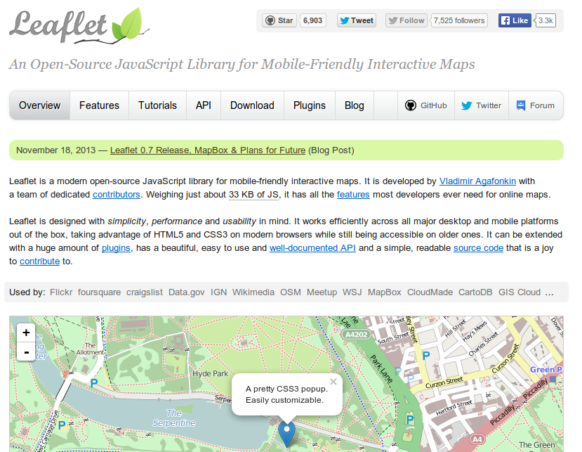Editing the data
ma è facile usare anche dati di una singola zona
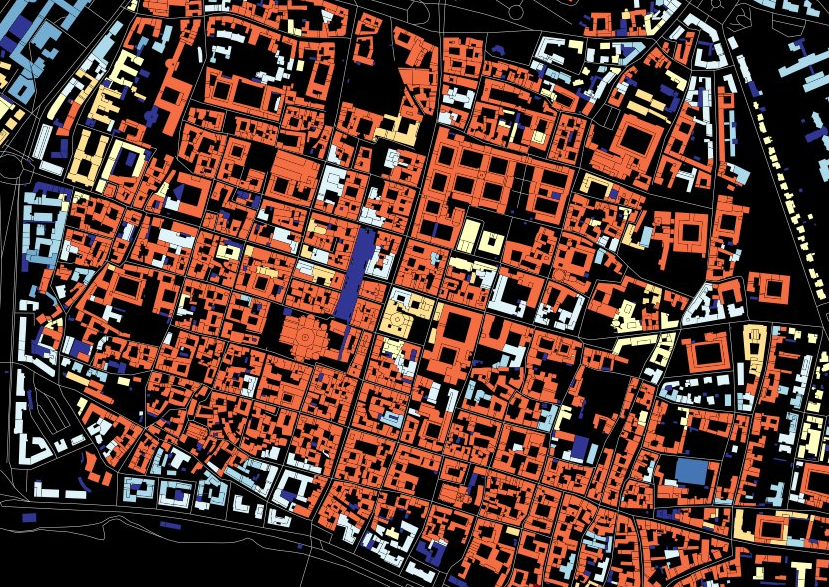- età edificato
- colorcoded su dati nativi OSM
start_date=*- in 2 ore
OSMOSE
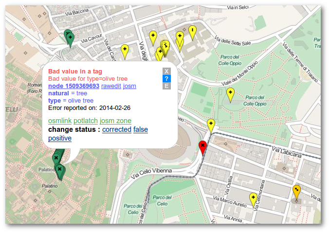quality assurance
... again a lot of tools http://wiki.openstreetmap.org/wiki/Quality_Assurance
Grazie
Simone Cortesi
simone@cortesi.com
Slides: CC-BY-SA